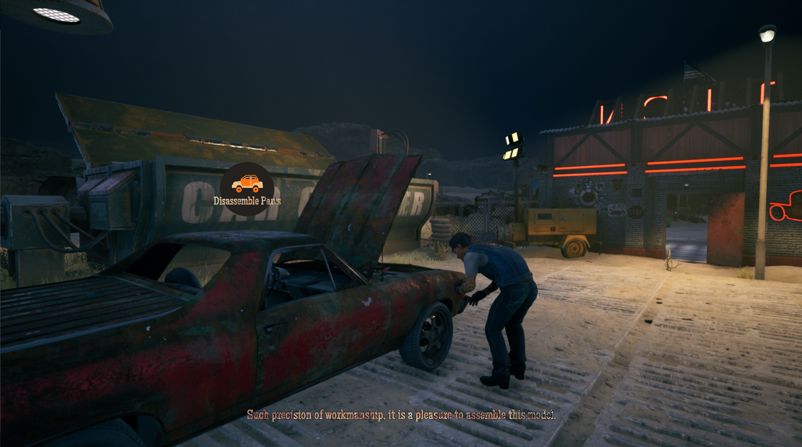
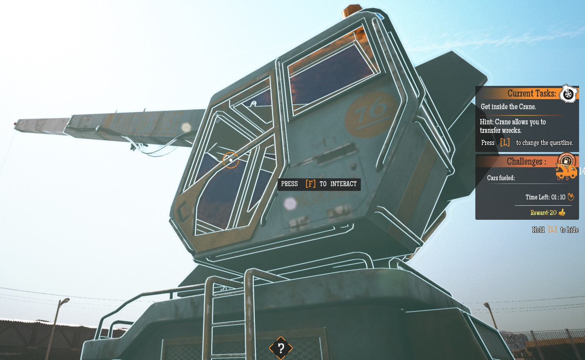

Drago Entertainment
Gas Station Simulator - Car Junkyard DLC
Car Junkyard is a DLC for Gas Station Simulator that expands the player's business with a new set of automotive services. Players work with Sean, a muscle car enthusiast whose business is struggling financially, to develop the junkyard into a destination for car enthusiasts.
My Contributions
Car Junkyard DLC was the second major project I worked on at Drago Entertainment. I took on more complex tasks and ownership of major features, focusing primarily on the AI for the DLC's main story NPC and the physics-based magnetic crane used to process car wrecks. I was also responsible for implementing most of the quest line.
Below are the key features and areas I was responsible for:
Magnet Crane
- Developed a physics-based magnet crane minigame that lets players reposition and process car wrecks.
- Balanced unpredictable physics interactions with the need to bring all elements into correct, deterministic final states.
- Adapted the crane asset created by the animation team to respond to player input and incorporate physics-based animation.
- Developed an AI controller that enables NPCs to operate the crane.

Sean - Story Character
- Adapted the existing story character AI system to support Sean's dual role as a story character and junkyard employee.
- Implemented stuck character recovery to help Sean reach his destination reliably and prevent quest progression issues.
- Implemented active and idle tasks to keep Sean occupied while ensuring he responds to player commands.
- Implemented a dynamic bark system that ensures Sean always has something interesting to say.

DLC Questline
- Took over a rough questline outline and rebuilt most quests from scratch to handle edge cases and unexpected player actions.
- Ensured every quest could be completed regardless of the player's base game progress or save file.
- Ensured saves made at any point in the questline restored the correct quest state when loaded.
